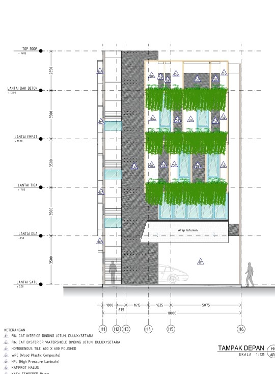
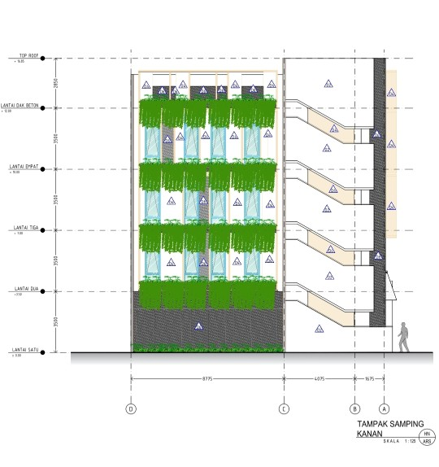
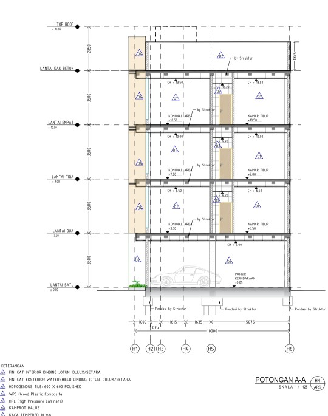
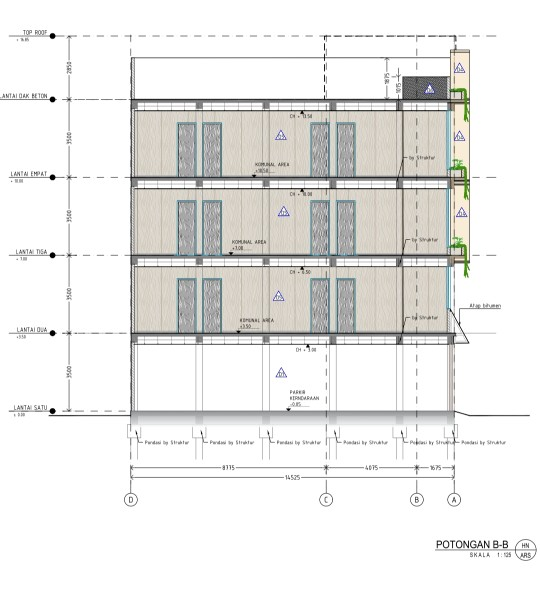
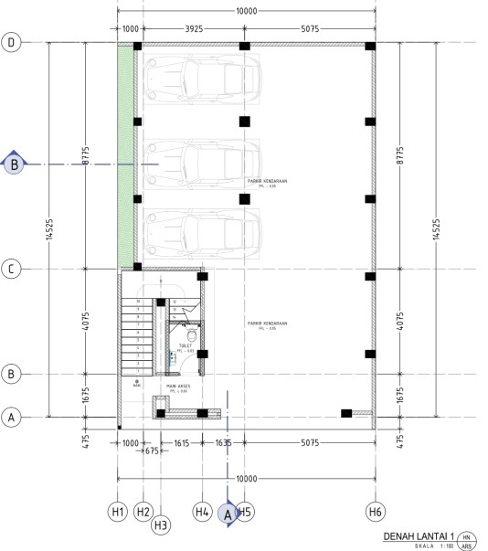
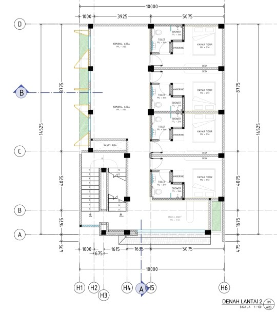
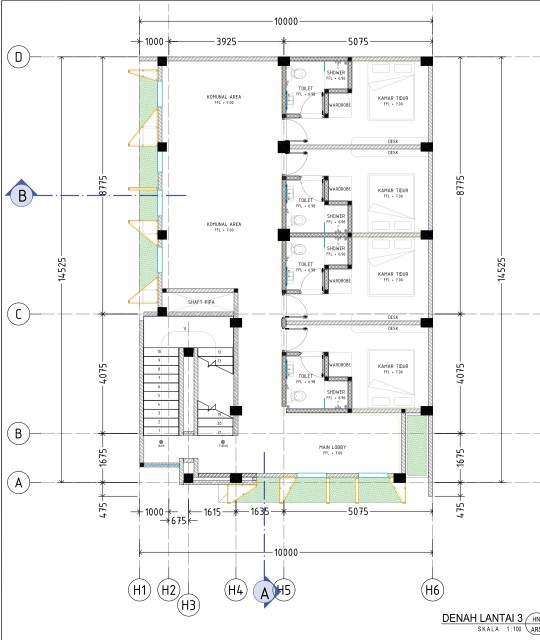
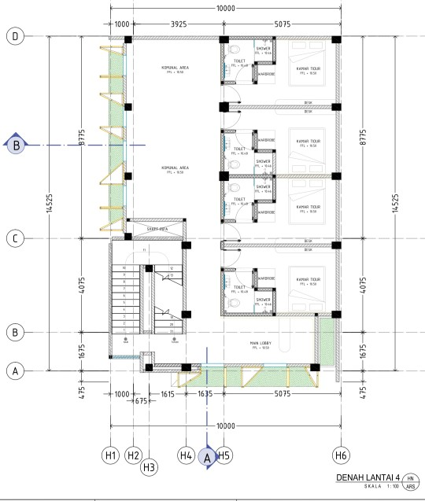

Memvisualisasikan desain teknis secara profesional, didukung keahlian dalam penyusunan RAB & RKS serta manajemen proyek dengan pengalaman lapangan sejak 2014.








Bumantara Karya Amerta — Bekasi
Membuat Gambar Kerja menggunakan AutoCAD dan SketchUp, menyusun RKS menggunakan Microsoft Word, serta berkoordinasi dengan tim.
Sarana Anugrah Rekacipta — Jakarta
Manajemen tim dan logistik material proyek jembatan antar kampung.
Mulia Jaya Abadi — Jakarta
Citra Tama Arsitek — Kerinci, Jambi
Project Renovasi SMK N 8 & UNAND — Padang
Pesantren Dar el-Iman — Padang
Haluan Digital Media — Padang
Japutra Teknikindo — Padang
SMK N 2 SIJUNJUNG — Sijunjung
Karya Cipta Sentosa — Jambi
Asri Konsultan — Padang
Spesialis di gambar teknik, detail struktur, dan pekerjaan infrastruktur.
Pemodelan 3D untuk visualisasi desain arsitektur.
Pengolahan data teknis, Rencana Anggaran Biaya (RAB), dan automasi formula.
Penyusunan dokumen teknis, RKS, dan laporan proyek profesional.